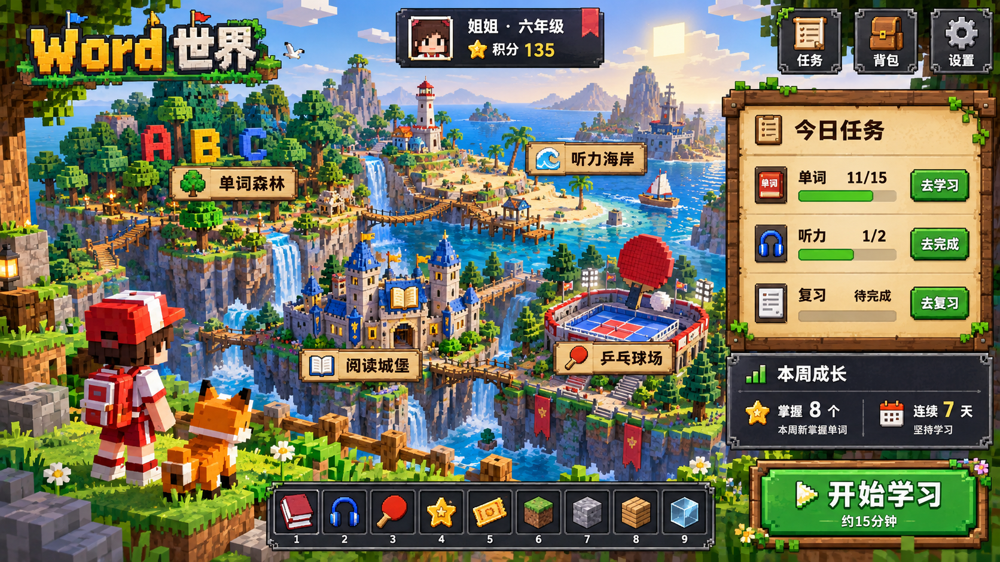

<!doctype html><html lang="zh-CN"><meta charset="utf-8"><meta name="viewport" content="width=device-width,initial-scale=1"><title>Word 世界 · 视觉设计评审</title><style>body{margin:0;background:#15202a;color:#f2f6fa;font:16px/1.6 system-ui}main{max-width:1680px;margin:auto;padding:20px}h1{font-size:24px;margin:0}p{color:#c1cfda}img{display:block;width:100%;height:auto;border:1px solid #596775}a{color:#9ddaff}button{font:inherit;padding:10px 16px;cursor:pointer;margin-bottom:16px}body.full main{max-width:none;padding:8px}</style><main><h1>Word 世界 · 体素像素风大厅</h1><p>完整静态视觉稿，用于评审美术方向；尚未实现页面交互。可点击原图放大查看。</p><button onclick="document.body.classList.toggle('full')">切换大图布局</button> <a href="lobby.png" target="_blank" rel="noopener">打开原图</a><a href="lobby.png"></a></main></html>
